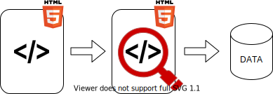

9. Web scraping
Noemi Romano
noemi.romano@heig-vd.ch
Extraction de données d'un site web
async, await
(async () => {
try {
const result = await doSomething();
const newResult = await doSomethingElse(result);
const finalResult = await doThirdThing(newResult);
console.log(finalResult);
} catch(err) {
console.log(err);
}
})();
isomorphic-fetch
(async () => {
const response = await fetch('https://example.com');
const text = await response.text();
})()
jsdom
import {JSDOM} from 'jsdom';
(async () => {
const response = await fetch('https://example.com');
const text = await response.text();
const dom = await new JSDOM(text);
console.log(dom.window.document.querySelector("h1").textContent);
})()
puppeteerEt beaucoup d'autres fonctionnalités!
ExemplesSyntaxe
import puppeteer from 'puppeteer';
(async () => {
// Lancement browser
const browser = await puppeteer.launch();
//Ouvrir une nouvelle page
const page = await browser.newPage();
//Aller au lien example.com
await page.goto('https://example.com');
//Sélecteurs
await page.$(sélecteur); // document.querySelector
await page.$$(sélecteur); // document.querySelectorAll
// EXEMPLE : await page.$$(div);
//Appliquer une fonction aux sélecteurs
await page.$$eval(sélecteur, pageFunction[...args]);
// EXEMPLE : const divCount = await page.$$eval('div', (divs) => divs.length);
//Cliquer sur un selecteur
await page.click(sélecteur);
//Faire un screenshot
await page.screenshot({ path: 'example.png' });
// Fermer les browser
await browser.close();
})();
Web scraping en pratique
Présentations mercredi 11- vendredi 13 mai
Calendrier